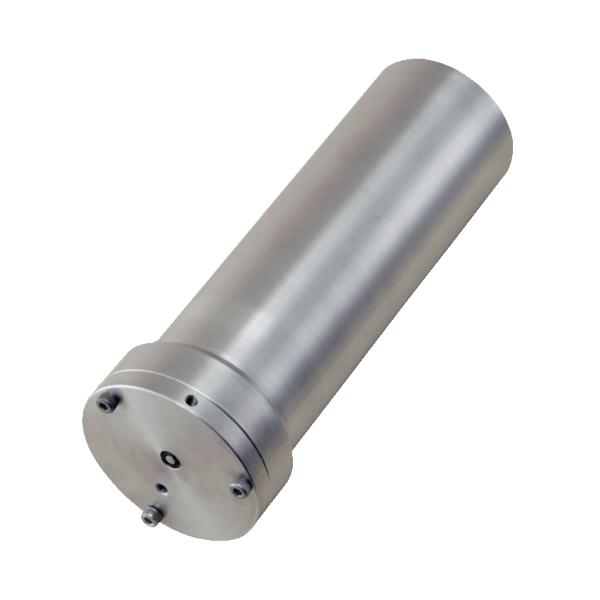

Transdutor de Pressão JFE Infinity AWH-USB

| Transdutor de Pressão JFE Infinity AWH-USB | |
|---|---|
| Localização: | Lab. 0.2 Edf. 7 |
| Responsável: | Margarida Ramires |
| Operador: | Utilizador |
| Princípio de Funcionamento: | Transdutor de Pressão |
| Fabricante: | JFE Advantech Co., Ltd. |
| Modelo: | Infinity AWH-USB |
| Tipo: | Transdutor de Pressão |
| Website: | JFE Advantech Co., Ltd. |
JFE Advantech INFINITY-WH AWH-USB, sistema de medição de altura de onda baseado em pressão, concebido para a monitorização de ondas e variações de nível em ambientes aquáticos. O equipamento utiliza um sensor de pressão semicondutor para medir a pressão hidrostática e determinar a profundidade, permitindo a aquisição de dados com elevada resolução temporal.
O sistema permite realizar medições em modo contínuo ou burst, com intervalos de amostragem entre 0,1 e 600 segundos, sendo adequado para a caracterização de ondas de diferentes períodos. Os dados são armazenados numa memória microSD e podem ser transferidos e configurados através de uma ligação USB.
Calendário / Disponibilidade
RequisitarPrincipais Aplicações
- Monitorização da altura e período das ondas;
- Caracterização da dinâmica de ondas em ambientes costeiros;
- Estudos oceanográficos e hidrodinâmicos;
- Monitorização de zonas costeiras e águas pouco profundas;
- Estudos de propagação e transformação de ondas;
- Monitorização de variações do nível da água;
- Estudos de erosão e dinâmica costeira;
- Aquisição de dados para estudos ambientais e de engenharia costeira;
Tipos de Amostra
- Água do mar;
- Água estuarina;
- Água doce;
Principais Vantagens:
- Medição da altura de onda através de um sensor de pressão;
- Elevada frequência de amostragem, com intervalos a partir de 0,1 s;
- Adequado para ondas de períodos curtos e longos;
- Modos de medição contínuo e burst;
- Memória microSD de elevada capacidade;
- Até 18.000 amostras por burst;
- Possibilidade de calcular altura e período de onda significativos, máximos e médios;
- Possibilidade de análise espectral dos dados;
- Comunicação e configuração através de USB;
- Construção robusta em titânio Grau 2;
- Concebido para instalação e monitorização em ambientes aquáticos;
Específicações Técnicas:
| Específicação | Valor |
|---|---|
| Fabricante | JFE Advantech Co., Ltd. |
| Modelo | Infinity AWH-USB |
| Parametro | Pressão (profundidade) |
| Princípio | Semicondutor |
| Intervalo | 0 a 25m |
| Resolução | 0.0005m |
| Precisão | ±0.14%FS |
| Tipo de Memória | Cartão miniSD |
| Capacidade de Data | 1 GB (standard) |